Studentereksamen
Dette prøvesæt er omfattet af ophavsretten, jf. ophavsretslovens § 1.
Prøvesættet må alene anvendes til den på prøvesættet anførte prøve.
Al anden anvendelse af prøvesættet, herunder visning eller deling f.eks. via internettet, sociale medier, portaler og bøger, udgør en krænkelse af Børne- og Undervisningsministeriets og evt. tredjemands ophavsret og er ikke tilladt.
Overtrædelse af ophavsretten kan være erstatningspådragende og/eller strafbart.
Prøvesættet kan dog, efter at prøven er afsluttet, anvendes til undervisningsbrug på uddannelser m.v. omfattet af den lovgivning, som Styrelsen for Undervisning og Kvalitet administrerer.
Kilder
|
Opgave 1 Introduktionsbillede: Opgavekommissionen i kemi STX 2023/24 Figur 1.1: Opgavekommissionen i kemi STX 2023/24 Figur 1.2: Opgavekommissionen i kemi STX 2023/24 Figur 1.3: Opgavekommissionen i kemi STX 2023/24 Figur 1.4: Opgavekommissionen i kemi STX 2023/24 Film: Opgavekommissionen i kemi STX 2023/24 Opgave 2 Introduktionsbillede: Colourbox Figur 2.1: Opgavekommissionen i kemi STX 2023/24 Figur 2.2: Opgavekommissionen i kemi STX 2023/24 Figur 2.3: Opgavekommissionen i kemi STX 2023/24 Figur 2.4: Opgavekommissionen i kemi STX 2023/24 Opgave 3 Introduktionsbillede: https://creativecommons.org/licenses/by-sa/4.0/deed.en https://commons.wikimedia.org/wiki/File: Carolyn_Bertozzi_by_Christopher_Michel_in_2022_4.jpg Figur 3.1: Opgavekommissionen i kemi STX 2023/24 Figur 3.2: Opgavekommissionen i kemi STX 2023/24 Opgave 4 Introduktionsbillede: Colourbox |
Opgave 4: Genindvinding af cobalt fra batterier
| Lithiumion-batterier anvendes fx i mobiltelefoner og elbiler. Disse batterier indeholder lithiumcobaltoxid. Da tilgængeligheden af især cobalt er begrænset, er genanvendelse af metaller fra batterier vigtig. En gruppe forskere har forsøgt at oprense lithium og cobalt fra et brugt lithiumion-batteri. | 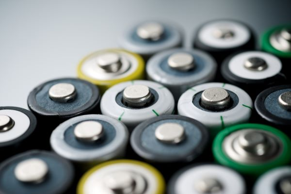 |
| Lithiumcobaltoxid fra batteriet behandles kemisk, og cobaltoxid, CoO, isoleres. Det dannede cobaltoxid reagerer med grafit ved reaktionen vist i figur 4.1. | |
2 CoO(s) + C(s) → 2 Co(s) + CO₂(g)
Figur 4.1
| a) | Vis, at reaktionen i figur 4.1 er en redoxreaktion. |
| b) | Beregn ΔH° og ΔS° for reaktionen i figur 4.1. Kommenter resultaterne i forhold til reaktionsskemaet. |
For at undersøge reaktionen i figur 4.1 anbringes en portion cobaltoxid i en lufttom beholder, og der tilsættes grafit i overskud. Beholderen opvarmes til 250 °C, og temperaturen holdes konstant. Reaktionen forløber indtil ligevægt.
| c) | Beregn partialtrykket af carbondioxid i beholderen, når ligevægten har indstillet sig. |
Et nyt eksperiment udføres ved 275 °C. Ved denne temperatur er ligevægtskonstanten 4,2 bar. I eksperimentet anbringes 9,0 g cobaltoxid i en 0,50 L lufttom beholder, og der tilsættes grafit i overskud. Der ses bort fra volumenet af cobaltoxid og grafit.
| d) | Beregn, hvor stor en procentdel af den tilførte mængde cobaltoxid der er omdannet, når ligevægten er indstillet ved 275 °C. |
Opgave 3: Bio-ortogonal kemi
| Carolyn Bertozzi, Morten Meldal og Barry Sharpless delte i 2022 Nobelprisen i kemi for udviklingen af klik-kemi og bio-ortogonal kemi. Bertozzi har udviklet den bio-ortogonale kemi, hvor klik-kemi anvendes til at lave kemiske reaktioner i levende celler. Bertozzi har fremstillet en gruppe af cykliske alkyner, som kan reagere med azider i klik-reaktioner uden katalysator. |
Carolyn Bertozzi |
Alkynen A, vist i figur 3.1, er et eksempel på en sådan cyklisk alkyn.
| 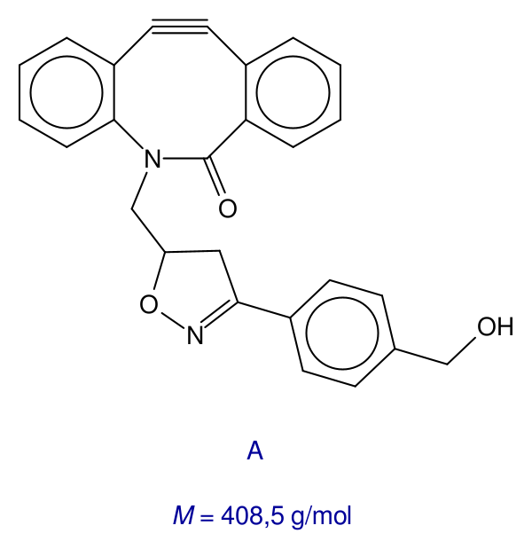 |
Figur 3.1
En stamopløsning af A fremstilles ved at opløse 19 mg af stoffet i et organisk opløsningsmiddel til et samlet volumen på 5,0 mL.
| a) | Beregn den formelle stofmængdekoncentration af A i opløsningen. |
Et azid er en kemisk forbindelse, der indeholder den funktionelle gruppe ‑N₃. Den bio-ortogonale klik-reaktion mellem A og azidet B er vist i figur 3.2.
 |
Den bio-ortogonale klik-reaktions hastighedskonstant, k, er blevet bestemt ved forskellige temperaturer. Resultaterne er vist i excelfilen nedenfor.
| b) | Bestem aktiveringsenergien for reaktionen. |
Hastighedsudtrykket for reaktionen vist i figur 3.2 kan skrives som
Man har undersøgt hastighedsudtrykket ved at bestemme initialhastigheden, v₀, i en række deleksperimenter. Temperaturen er den samme i alle deleksperimenterne. Resultaterne er vist i tabel 3.1.
Tabel 3.1
| [A]₀/ᴍ | [B]₀ /ᴍ | v₀ / 10⁻⁴ ᴍ·s⁻¹ | ||
| 0,012 | 0,012 | 1,41 | ||
| 0,006 | 0,012 | 0,69 | ||
| 0,003 | 0,012 | 0,35 | ||
| 0,012 | 0,006 | 0,70 | ||
| 0,012 | 0,003 | 0,35 |
| c) | Bestem x, y og k i hastighedsudtrykket. |
Opgave 2: Avobenzon - et kemisk filter i solcreme
| Ved ophold i solen anbefales, at man benytter solcreme for at undgå solskoldning og på længere sigt hudkræft. Det er solens ultraviolette stråling, som udgør problemet. Der skelnes mellem kemiske og fysiske filtre i solcreme til beskyttelse. De kemiske filtre består af stoffer, der optager energirig ultraviolet stråling. Stoffet avobenzon er godkendt som kemisk filter i solcreme. |
Man inddeler ultraviolet stråling i 3 områder: UV-A, UV-B og UV-C som vist i tabel 2.1.
Tabel 2.1
| UV-C | UV-B | UV-A | |
| λ / nm | 200 - 280 | 280 - 320 | 320 - 400 |
I figur 2.1 ses absorptionsspektret for avobenzon i UV-området.
| 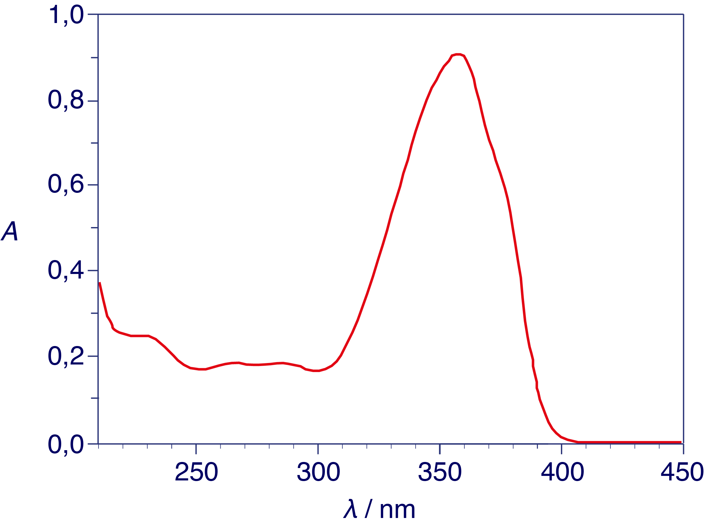 |
| a) | Afgør om avobenzon især beskytter mod ultraviolet stråling fra solen i form af UV-A, UV-B eller UV-C. Inddrag figur 2.1 og tabel 2.1. |
Avobenzon kan findes i to former. I figur 2.2 ses strukturformler for avobenzons to former. Det er avobenzon B, der anvendes i solcremen.
| 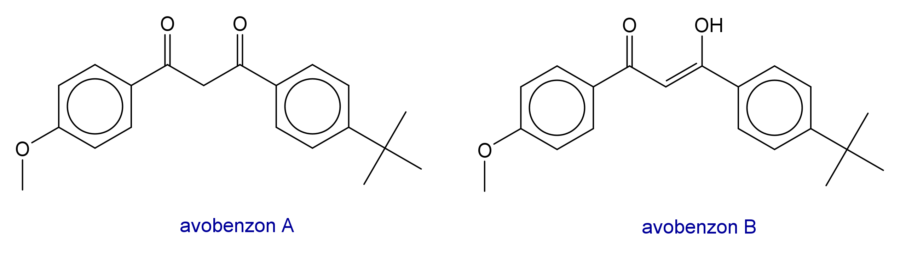 |
| b) | Gør rede for, at avobenzon B kan udvise stereoisomeri, og forklar, at avobenzon B, vist i figur 2.2, er Z-formen. |
De sidste trin i en syntese af avobenzon er vist i figur 2.3.
| 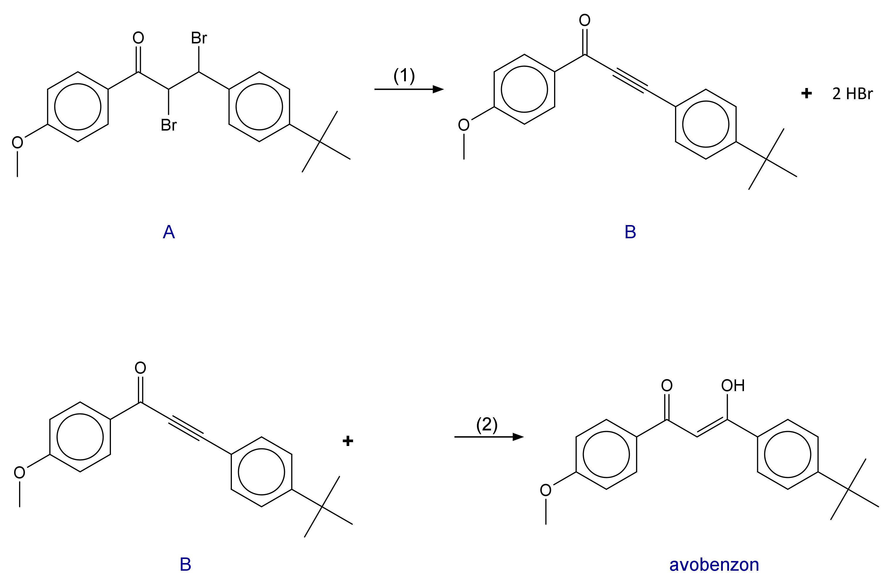 |
Figur 2.3
MarvinSketchfil reaktion (2) Figur 2.3
ChemSketchfil_reaktion (2) Figur_2.3
c) |
Gør rede for reaktionstyperne for reaktion (1) og for reaktion (2) vist i figur 2.3. Færdiggør reaktionsskemaet for reaktion (2). |
For at de kemiske solfiltre ikke skylles af, når man bader, skal stofferne være upolære, så de trænger ind i huden.
Fordelingsforholdet, D, for avobenzon er givet ved
| 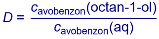 |
Da avobenzon er en syre, se figur 2.4, afhænger fordelingsforholdet af pH. Avobenzons syreegenskab skyldes OH-gruppen.
| 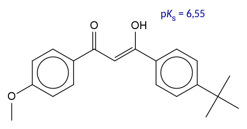 |
| pH | D |
| 4 | 3,3·10⁴ |
| 12 | 10 |
| d) | Forklar ændringerne i D, når pH stiger fra 4 til 12. Inddrag avobenzons syre-baseegenskaber. |
Opgave 1: Adipinsyre
| Adipinsyre er et vigtigt råstof i den kemiske industri, hvor det især anvendes til fremstilling af nylon. Stoffet har dog også mange andre anvendelser, fx i lægemidler og som smagsstof og surhedsregulerende middel i fødevarer. Som surhedsregulerende middel bruges det blandt til geleprodukter, fx det amerikanske Jell-O®. | 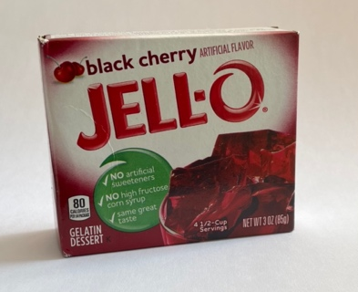 |
En mættet vandig opløsning af adipinsyre anvendes på nogle affaldsforbrændingsanlæg sammen med kalk til at rense røggasserne for miljøskadelige svovlforbindelser.
| 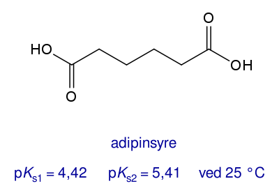 |
| a) | Gør rede for, at det systematiske navn for adipinsyre er hexandisyre. |
En elev ønsker at bestemme den formelle stofmængdekoncentration af adipinsyre i en mættet opløsning. Titreringen er vist i filmen nedenfor.
I figur 1.2 er titrerkurven vist.
| 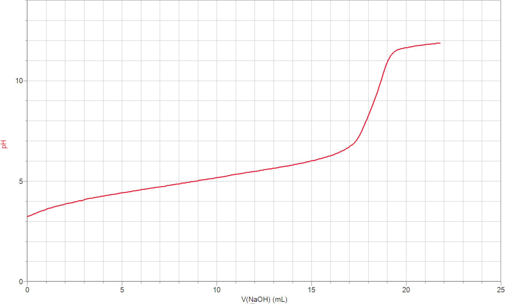 |
| b) | Bestem stofmængdekoncentrationen af adipinsyre i den mættede opløsning. |
En række estere af adipinsyre bruges som tilsætningsstoffer til plast og i kosmetiske produkter. En af disse estere har formlen vist i figur 1.3.
| 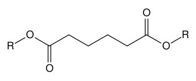 |
R betegner en alkylgruppe.
En elementaranalyse af esteren giver molekylets sammensætning angivet i masseprocenter, som vist i tabel 1.1.
| C | H | O |
65,09% |
10,14% |
24,77% |
| c) | Bestem molekylformlen for esteren i figur 1.3. |
Ved hydrolyse af esteren dannes alkoholen R-OH. I figur 1.4 er vist ¹H-NMR-spektret for alkoholen. Spektrometerfrekvensen er 500 MHz.
| d) | Bestem strukturen for alkoholen. Inddrag integralkurver, kemiske skift og koblingsmønstre, idet signaler i spektret tilordnes stoffets strukturformel. |
Vejledning
| Prøven
Opgavesættet består af 4 opgaver med i alt 15 delopgaver. Følgende hjælpemidler forudsættes: DATABOG fysik kemi (F&K Forlaget), 11. udgave (2007) eller senere udgave. Opgavebesvarelsen Din opgavebesvarelse skal afleveres i et samlet dokument, gemt i pdf-format. Bedømmelse Ved den skriftlige prøve lægges der vægt på din evne til at:
Der gives en karakter på baggrund af en helhedsvurdering. |
||||||||||||||||||||||
Kemi A
Tirsdag den 4. juni 2024
Kl. 9.00-14.00